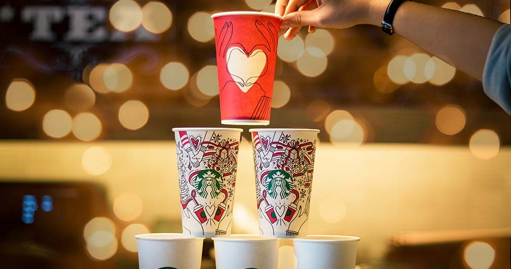

Careers at Starbucks
At Starbucks, a job isn’t just a paycheck; it’s an opportunity to grow. From day one, partners (what Starbucks calls its employees) are invited to bring their whole selves to work, make meaningful connections, and build the future, cup by cup.
Every great Starbucks store begins with someone putting on the iconic green apron — the Barista. Baristas handcraft drinks, interact with customers, and create that warm, welcoming vibe the brand is known for. They’re the frontline storytellers for Starbucks culture. From there, many partners move into leadership roles. Shift Supervisors help guide their team through daily operations — making sure things stay on track while coaching, supporting, and stepping in wherever needed.
What makes Starbucks especially unique is how open the path is. Over 60% of their Store Managers began their journey as Baristas. Store Managers oversee all store functions — staffing, budgets, team development, store performance, and ensuring every partner and customer has a consistent, quality experience. That means no matter where you start, there’s real upward mobility — the possibility to take your passion and turn it into leadership.
Starbucks also supports its partners with benefits tailored to life beyond work, ongoing education opportunities, and a culture built on shared ownership — a belief that when partners succeed, the coffeehouse as a whole succeeds.
Store Managers
Store Managers oversee the entire café, ensuring smooth daily operations and a welcoming customer experience. They lead their teams, manage scheduling, and handle business responsibilities like budgeting and store performance.
Shift Supervisors
Shift Supervisors support the store manager by guiding partners during shifts. They keep operations on track, coach team members, and make sure every customer gets fast and friendly service.
Baristas
Baristas are the heart of the Starbucks experience. They craft beverages to standard, connect with customers through genuine interactions, and help maintain a clean and efficient workspace.